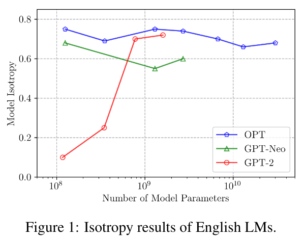
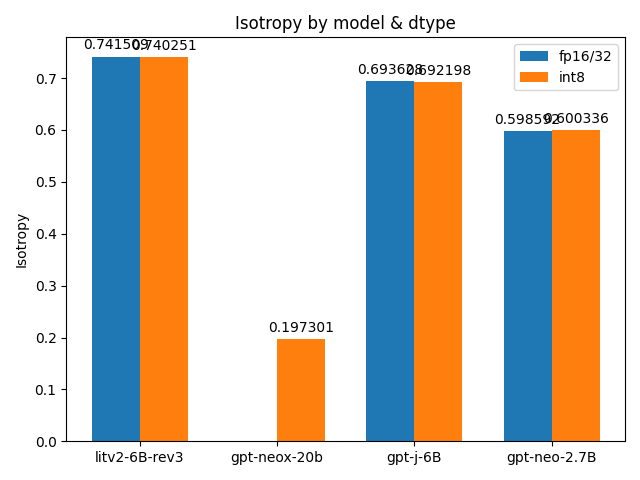

TL;DR
- GPT-NeoX-20B appears to be anisotropic (Isotropy: 0.197)
- Int8 quantisation appears to have ~no effect on isotropy
- I am new to ML so the above could be false, feel free to poke at my findings here
Evaluating the isotropy of more language models
In Contrastive Search Is What You Need For Neural Text Generation, it is argued that
through extensive evaluations on a wide range of LMs with different scales, we empirically show that the English autoregressive LMs are naturally isotropic,

They also show a cool graph representing this finding
Do I have any idea what that means? Nope. I know that it makes contrastive search useful, but I don’t grasp any of the mathematics.
What I did find out: the evaluation harness for isotropy used in the paper is open source and very easy to install! So I decided to try running it on a few models that were absent in the paper.
GPT-J-6B
I’m already working on a project with GPT-J, so I started with it.
Getting the isotropy evaluation code installed is simple.
Setup conda env
|
|
Clone repo & extract dataset
|
|
Add code for new GPT model
After getting the evaluation code installed, I edited the code to work for GPT-J, as shown in this commit.
|
|
Result:
|
|
0.69 is about what you’d expect from the paper, no surprise there.
GPT-NeoX-20B
My hardware setup is limited to an RTX 3090, so the only way I can run NeoX-20B (without more money) is to load it with LLM.int8().
I eventually achieve that after some debugging:
Working from the same commit, I get a strange result:
|
|
nan. The bane of Machine Learning. I’m 99% certain this is wrong in some way, so I add print statements everywhere.
Eventually, I notice that the last_hidden_states of the model’s forward pass looks like this:
|
|
And that if I call the model right after model.eval(), I get this:
|
|
Eventually, I figure out the line of code that’s responsible:
|
|
The model is initialised with device_map='auto', which puts the model on device='cuda:0' on my machine, which should be equivalent to the device in the above line.
I do not understand why the above line causes everything to go to nan, but I also do not think it is related to the result later on, because this problem occurs in other models (e.g. GPT-J-6B) as well.
I’m leaving this information here in case I happen to be wrong.
|
|
And this is the reason why I bothered to write this post at all. 8bit GPT-NeoX-20B, as evaluated on my machine, appears to be anisotropic.
Is Int8 the problem?
Probably not.

I tested int8 quantisised vs fp16/fp32 models, and got mostly identical results.
I can’t rule out the possibility that my code/hardware is broken specifically for NeoX-20B, but I think the experiments I’ve done are strong indicators that bugged code is probably not the cause of the observed anisotropy.